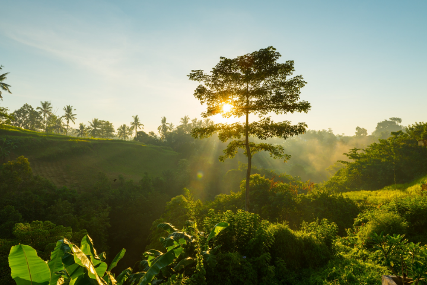

CONHEÇA NOSSO PROJETO
Conheça nosso projeto de meio ambiente! Nós acreditamos que a
preservação do meio ambiente é essencial para garantir a saúde e o
bem-estar das atuais e futuras gerações. Por isso, nos esforçamos em
criar soluções inovadoras e eficazes para lidar com questões
ambientais na nossa comunidade. Nosso projeto é centrado em três
pilares: conservação, educação e participação cidadã. Trabalhamos para
preservar as áreas verdes da nossa região e para garantir a proteção
da biodiversidade local. Além disso, promovemos a educação ambiental
para crianças e adultos, fornecendo informações e habilidades para que
possam agir de forma responsável com relação ao meio ambiente. Também
incentivamos a participação ativa da população na busca de soluções
para questões ambientais. Acreditamos que a união e a colaboração são
fundamentais para o sucesso de qualquer projeto ambiental. Nosso
objetivo é construir uma comunidade mais consciente e responsável com
relação ao meio ambiente. Junte-se a nós e faça parte desse movimento!
Juntos, podemos fazer a diferença.
IMPACTOS CAUSADOS PELA POLUIÇÃO E DESCARTE
A poluição e o descarte inadequado de resíduos têm vários impactos
negativos na saúde humana, no meio ambiente e no planeta como um todo.
Alguns dos impactos mais significativos incluem:


- Saúde humana: a poluição do ar, da água e do solo pode causar doenças respiratórias, cardiovasculares, neurológicas e outras condições de saúde. Além disso, o descarte inadequado de resíduos tóxicos pode liberar substâncias perigosas na atmosfera e na água, prejudicando a saúde humana.
- Meio ambiente: a poluição do ar, da água e do solo pode matar plantas e animais, alterar os ecossistemas e prejudicar a biodiversidade. Além disso, o descarte inadequado de resíduos pode prejudicar a vida selvagem e os habitats naturais.
- Mudanças climáticas: a poluição do ar, causada principalmente pelos gases de efeito estufa emitidos pelo uso de combustíveis fósseis, é um dos fatores responsáveis pelas mudanças climáticas que estão acelerando a taxa de aquecimento global.
- Escassez de recursos naturais: a extração excessiva de recursos naturais para produção de bens e energia, juntamente com o descarte inadequado de resíduos, está levando a uma escassez de fontes de energia renováveis e ao esgotamento de recursos naturais
BENEFÍCIOS DA EDUCAÇÃO AMBIENTAL DAS CRIANÇAS
A educação ambiental para crianças é crucial para o desenvolvimento
de uma sociedade consciente e responsável em relação à preservação do
meio ambiente. Alguns dos principais benefícios incluem:
- Conscientização: a educação ambiental ajuda as crianças a compreender a importância do meio ambiente e o impacto das suas ações no planeta. Isso ajuda a desenvolver uma conscientização ambiental a longo prazo.
- Habilidades de pensamento crítico: a educação ambiental desenvolve habilidades de pensamento crítico e de resolução de problemas, ajudando as crianças a identificar e solucionar questões ambientais de forma efetiva.
- Valores: a educação ambiental ajuda a desenvolver valores como respeito à natureza, responsabilidade ambiental e colaboração, que são importantes para o bem-estar do meio ambiente e da sociedade como um todo.
- Participação cidadã: a educação ambiental incentiva as crianças a se envolverem em questões ambientais e a participarem ativamente da preservação do meio ambiente. Isso contribui para o desenvolvimento de uma sociedade mais consciente e participativa.
- Saúde mental e física: as atividades ambientais, como passeios ao ar livre e contato com a natureza, podem ajudar a melhorar a saúde mental e física das crianças, além de fortalecer seu vínculo com a natureza. Em resumo, a educação ambiental é fundamental para o desenvolvimento de uma sociedade consciente e responsável em relação ao meio ambiente, e é por isso que é importante que sejam investidos recursos para fomentar a educação ambiental desde a infância.

OBJETIVOS DA EDUCAÇÃO AMBIENTAL
Os objetivos da educação ambiental são desenvolver habilidades e
valores que permitam às pessoas compreender e interagir de forma
responsável com o meio ambiente. Alguns dos objetivivos específicos
incluem:
- Conscientização: sensibilizar as pessoas para a importância do meio ambiente e dos recursos naturais e para o impacto das suas ações no planeta.
- Desenvolvimento de habilidades: desenvolver habilidades de pensamento crítico, resolução de problemas e decisão informada para lidar com questões ambientais.
- Valores: fomentar valores como responsabilidade ambiental, respeito à natureza, cooperação e solidariedade para o bem-estar do meio ambiente e da sociedade como um todo.
- Participação cidadã: incentivar as pessoas a participarem ativamente na preservação do meio ambiente e na busca de soluções para questões ambientais.
- Compreensão dos sistemas ambientais: fornecer aos indivíduos uma compreensão dos sistemas ambientais e dos processos que afetam o meio ambiente.
- Desenvolvimento sustentável: contribuir para o desenvolvimento sustentável, equilibrando as necessidades econômicas, sociais e ambientais.
EMPRESAS PARCEIRAS